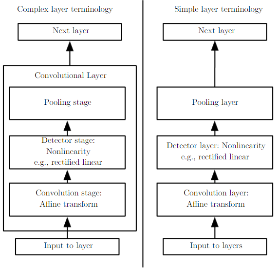

深度学习模型开发基概
数学对象：标量、向量、矩阵、张量
计算：外积、内积(element-wise product)、p-norm
不确定性(Uncertainty)和随机性(Stochasticity)是机器学习始终要面对的问题：在非确定的环境下进行推理和决策
离散、连续
随机变量是一种可随机取得多个不同取值的实值函数 举个栗子： 随机变量X：抛一个均匀的硬币 - X(抛一个均匀的硬币得到正面朝上)=1 - X(抛一个均匀的硬币得到反面朝上)=0 P(X=1)=1/2； P(X=0)=1/2
概率分布描绘了一个/多个随机变量获得每个可能的取值的可能性(离散/连续) P(x=x)P(\mathbf{x}=x)P(x=x)
联合概率分布：xxx和yyy同时发生的概率
P(x=x,y=y)P(\mathbf{x}=x, \mathbf{y}=y)P(x=x,y=y)
边缘概率分布：只考虑xxx发生的概率
∀x∈x\forall x\in \mathbf{x}∀x∈x, P(x=x)=∑yP(x=x,y=y)P(\mathbf{x}=x)=\sum_yP(\mathbf{x}=x,\mathbf{y}=y)P(x=x)=∑yP(x=x,y=y)
条件概率分布：当y=y\mathbf{y}=yy=y发生时x\mathbf{x}x的概率
P(x=x∣y=y)=P(x=x,y=y)P(x=x)P(\mathbf{x}=x\mid\mathbf{y}=y)=\frac{P(\mathbf{x}=x, \mathbf{y}=y)}{P(\mathbf{x}=x)}P(x=x∣y=y)=P(x=x)P(x=x,y=y)
深度全连接网络(DNN)又称多层感知机 (Multilayer Perceptrons)，其目标是估计某个未知的目标函数f∗f^*f∗，例如： 针对一个分类器，y=f∗(x)y=f^*(\bm x)y=f∗(x)构建了一个输入x\bm xx到分类类别yyy的映射，那么一个DNN则可表示为y=f(x;θ)y=f(\bm{x};\bm{\theta})y=f(x;θ)，通过学习得到θ\mathbf{\theta}θ的一组取值使得fff是f∗f^*f∗的最佳估计。
f(x)=f(3)(f(2)(f(1)(x)))f(\bm{x})=f^{(3)}(f^{(2)}(f^{(1)}(\bm{x})))f(x)=f(3)(f(2)(f(1)(x)))
针对输入x\bm xx，输出向量y\bm yy，其中每个yyy都有如下描述 选择线性模型，其中参数θ\bm{\theta}θ包含w\bm{w}w和bbb f(x;w,b)=x⊤w+bf(\bm{x};\bm w,b)=\bm x^\top\bm w + bf(x;w,b)=x⊤w+b
通过引入非线性函数(nonlinear function)可增加模型非线性的能力，在DNN中，也称之为激活函数 f(x;w,b)=g(x⊤w+bf(\bm{x};\bm w,b)=g(\bm x^\top\bm w + bf(x;w,b)=g(x⊤w+b) 常用非线性函数: Sigmoid, ReLU, tanh, LeakyReLU...
一般地，针对二分类问题而言，DNN的输出见如下定义 f(x;w,b)=σ(x⊤h+bf(\bm{x};\bm w,b)=\sigma(\bm x^\top\bm h + bf(x;w,b)=σ(x⊤h+b) 其中，z=x⊤h+bz=\bm x^\top\bm h + bz=x⊤h+b是DNN的原始输出，是非归一化(unnormalized)的表示，随后通过sigmoid函数赋予概率含义
对于多分类问题而言，则用softmax函数赋予所有ziz_izi概率含义 softmax(z)i=exp(zi)∑jexp(zj)\text{softmax}(\bm z)_i=\frac{\exp(z_i)}{\sum_j\exp(z_j)}softmax(z)i=∑jexp(zj)exp(zi) 其中，exp(x)=ex\exp(x)=e^xexp(x)=ex
学习目标: 设计一种可用来度量基于θ\bm \thetaθ的DNN预测结果和真实结果差距的度量，差距越小，DNN越接近需估计的函数f∗f^*f∗ J(θ)=1n∑x∈X(f∗(x)−f(x;θ))2J(\bm \theta)=\frac{1}{n}\sum_{\bm x\in \mathcal{X}}(f^*(\bm x)-f(\bm x;\bm\theta))^2J(θ)=n1∑x∈X(f∗(x)−f(x;θ))2
学习方法：梯度下降
传统卷积：信号系统中考虑之前时刻的信号经过一些过程后对现在时刻系统输出的影响。 互相关：深度学习领域的“卷积”，考虑两个函数之间基于空间位置的相关性
互相关函数SSS S(i,j)=(K∗I)(i,j)=∑m∑nI(i+m,j+n)K(m,n)S(i,j)=(K*I)(i,j)=\sum_m\sum_nI(i+m,j+n)K(m,n)S(i,j)=(K∗I)(i,j)=∑m∑nI(i+m,j+n)K(m,n)

任务目标：利用PyTorch训练一个图像分类的模型，保存成Core ML模型
Pipeline：
CIFAR10
通过torchvision,轻松载入CIFAR10数据集
torchvision
import torch import torchvision import torchvision.transforms as transforms
transform = transforms.Compose( [transforms.ToTensor(), transforms.Normalize((0.5, 0.5, 0.5), (0.5, 0.5, 0.5))]) trainset = torchvision.datasets.CIFAR10(root='./data', train=True, download=True, transform=transform) trainloader = torch.utils.data.DataLoader(trainset, batch_size=4, shuffle=True, num_workers=2) testset = torchvision.datasets.CIFAR10(root='./data', train=False, download=True, transform=transform) testloader = torch.utils.data.DataLoader(testset, batch_size=4, shuffle=False, num_workers=2) classes = ('plane', 'car', 'bird', 'cat', 'deer', 'dog', 'frog', 'horse', 'ship', 'truck')
import matplotlib.pyplot as plt import numpy as np # functions to show an image def imshow(img): img = img / 2 + 0.5 # unnormalize npimg = img.numpy() plt.imshow(np.transpose(npimg, (1, 2, 0))) plt.show() # get some random training images dataiter = iter(trainloader) images, labels = dataiter.next() # show images imshow(torchvision.utils.make_grid(images)) # print labels print(' '.join('%5s' % classes[labels[j]] for j in range(4)))
cat truck deer cat
定义一个简单网络
import torch.nn as nn import torch.nn.functional as F class Net(nn.Module): def __init__(self): super(Net, self).__init__() self.conv1 = nn.Conv2d(3, 6, 5) self.pool = nn.MaxPool2d(2, 2) self.conv2 = nn.Conv2d(6, 16, 5) self.fc1 = nn.Linear(16 * 5 * 5, 120) self.fc2 = nn.Linear(120, 84) self.fc3 = nn.Linear(84, 10) def forward(self, x): x = self.pool(F.relu(self.conv1(x))) x = self.pool(F.relu(self.conv2(x))) x = x.view(-1, 16 * 5 * 5) x = F.relu(self.fc1(x)) x = F.relu(self.fc2(x)) x = self.fc3(x) return x net = Net()
设定损失函数和优化器
import torch.optim as optim criterion = nn.CrossEntropyLoss() optimizer = optim.SGD(net.parameters(), lr=0.001, momentum=0.9)
训练网络
for epoch in range(2): # loop over the dataset multiple times running_loss = 0.0 for i, data in enumerate(trainloader, 0): # get the inputs; data is a list of [inputs, labels] inputs, labels = data # zero the parameter gradients optimizer.zero_grad() # forward + backward + optimize outputs = net(inputs) loss = criterion(outputs, labels) loss.backward() optimizer.step() # print statistics running_loss += loss.item() if i % 2000 == 1999: # print every 2000 mini-batches print('[%d, %5d] loss: %.3f' % (epoch + 1, i + 1, running_loss / 2000)) running_loss = 0.0 print('Finished Training')
保存网络
PATH = './cifar_net.pth' torch.save(net.state_dict(), PATH)
加载网络
net = Net() net.load_state_dict(torch.load(PATH))
试一下
dataiter = iter(testloader) images, labels = dataiter.next() outputs = net(images) _, predicted = torch.max(outputs, 1) print('Predicted: ', ' '.join('%5s' % classes[predicted[j]] for j in range(4)))
输出
Predicted: cat car car plane
correct = 0 total = 0 with torch.no_grad(): for data in testloader: images, labels = data outputs = net(images) _, predicted = torch.max(outputs.data, 1) total += labels.size(0) correct += (predicted == labels).sum().item() print('Accuracy of the network on the 10000 test images: %d %%' % ( 100 * correct / total))
dummy_input = torch.rand(1,3,32,32) input_names = ['image'] output_names = ['classLabelProbs'] torch.onnx.export(model, dummy_input, 'my_net.onnx', verbose=True, input_names = input_names, output_names = output_names)
pip安装onnx_coreml
pip
onnx_coreml
from onnx_coreml import convert class_labels = ['air plane', 'automobile', 'bird', 'cat', 'deer', 'dog', 'frog','horse','ship','truck'] model = convert(model='my_net.onnx', minimum_ios_deployment_target='13',image_input_names=['image'], mode='classifier', predicted_feature_name='classLabel', class_labels=class_labels)
⽤Xcode打开模型⽂件，便可看到模型相关的信息。